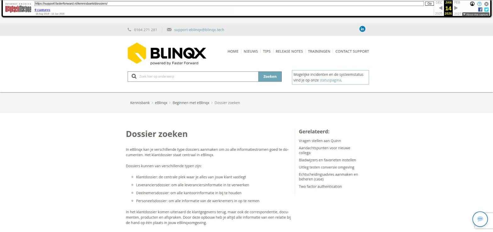

Dossier zoeken

Tekstinhoud
Dossier zoeken
In eBlinqx kan je verschillende type dossiers aanmaken om zo alle informatiestromen goed te documenten. Het klantdossier staat centraal in eBlinqx.
Dossiers kunnen van verschillende typen zijn:
Klantdossier: de centrale plek waar je alles van jouw klant vastlegt
Leveranciersdossier: om alle leveranciersinformatie in te verwerken
Deelnemersdossier: om alle kantoorinformatie in bij te houden
Personeelsdossier: om alle informatie van de werknemers in op te nemen
In het klantdossier komen uiteraard de klantgegevens terug, maar ook de correspondentie, documenten, producten en afspraken. Door deze opbouw heb je altijd alle informatie van een relatie bij de hand op één plaats in jouw eBlinqxomgeving.
Voor verdere uitleg over hoe je een dossier aanmaakt, klik je hier.
Bestaande klant opzoeken
Via het dashboard kan je een bestaand dossier zoeken. Hier kan je op verschillende aspecten zoeken zoals; achternaam, straat, postcode etc.
Let op: het veld Status (te zien als je klikt op 'Toon uitgebreide filters') staat standaard op de dossiersysteemstatus Nieuw & Lopend. Dit houdt in dat er alleen gezocht wordt in dossiers die de dossiersysteemstatus 'Nieuw' of 'Lopend' hebben. Dossiers met de dossiersysteemstatus 'Beëindigd' worden dus niet getoond. Door middel van een setting is het mogelijk om 'Alle' als standaard in te stellen, dan wordt er binnen alle dossiersysteemstatussen gezocht. Is dit gewenst? Stuur dan een e-mail naar support-eblinqx@blinqx.tech.
Tips
Tip 1: Zorg ervoor dat je altijd een percentage teken ( % ) voor hetgeen zet waar je op wilt zoeken. Wanneer de klant vreemde tekens in zijn naam heeft, bijvoorbeeld een umlaut, dan kan je het % teken zetten op de plek waar de letter met het vreemde teken staat.
Tip 2: Via 'toon uitgebreide filters' kan je alle filters zien waarop je kunt zoeken. Daarnaast kan je daar selecteren op welke type dossier je wilt zoeken. Indien een klantdossier niet naar voren komt, kan het zijn dat het type klantdossier niet geselecteerd is (deze is dan grijs) of het dossier valt niet binnen de dossiersysteemstatussen Nieuw & Lopend (het zoekveld Status staat standaard op deze waarde).
Tip 3: Via het icoon Recente dossier – zoek dossier kom je op het dashboard uit en zijn de uitgebreide filters direct uitgeklapt
Om door te gaan naar de uitleg voor Pagina's & Knoppen kan je hier klikken.
Laatste update: 15 oktober 2025
Tagged: dossier
Was deze informatie nuttig?
Ja Nee